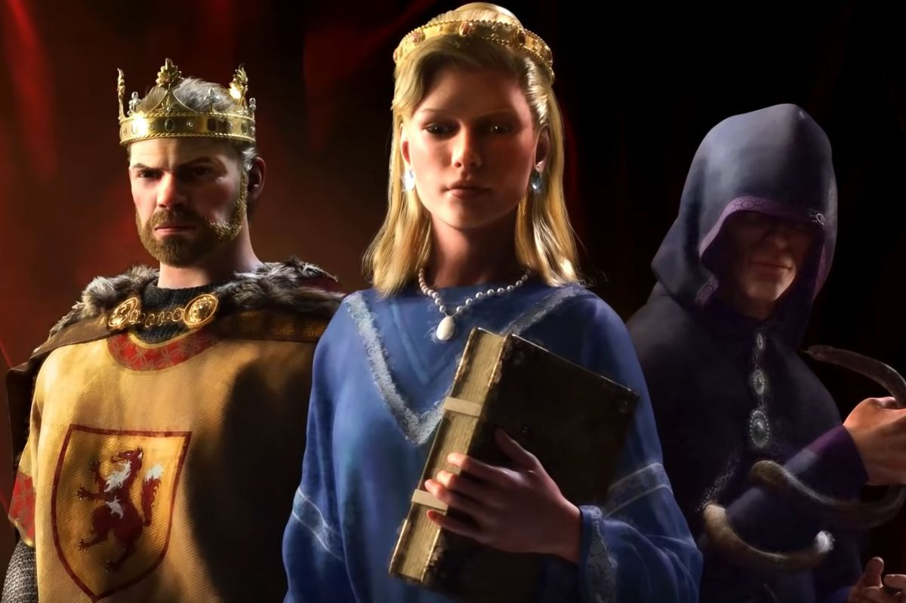
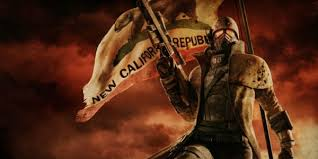

På min fritid så gör jag en rad olika saker, och nedans presenteras en del av dessa
Tv-spel
Det intresse som jag spenderar mest tid på är tv-spel. Jag spelar nästan varje dag, och detta är det som tar upp pluraliteten av min fritid. Vilka som är mina favoritspel varierar ofta, eftersom ett nytt spel ofta är roligare att spela än ett som man redan spelat, även om det mer spelade egentligt är bättre, men jag ger två olika exempel nedan.
Crusader Kings 3
(Bild ovan länkar till CK3 wiki, med ytterligare information)
Detta spel är en medeltida politik simulator, men fokus på karaktärer och role playing.
Man börjar som en historisk individ, exempelvis William The Bastard/Conquerer, och upplever sedan världen som denna person till hens död. Men detta är inte slutet av spelet, för att så länge som din arvinge är av din dynasti så du fortsätta spela som denna nya karaktär. Världen upplevs främst genom en karta, som visar den nuvarande situationen i olika områden/länder, och "events" som berättar om din karaktärs liv och interaktioner med andra karaktärer. Största delen av Eurasien inkluderas, och man kan välja mellan start åren 867 eller 1066.
Fallout : New Vegas
Fallout : New Vegas är ett postapokalyptiskt role playing shooter spel
Spelet är berättelsen om en brevbärare i ett postapokalyptiskt samhälle, som vid leveransen av ett viktigt objekt blir rånad och nästan dödad. Han eller Hon, då spelet är en RPG, väljer att bege sig till New Vegas, en av de få städerna i Mojave öknen, för att få sin hämnd och återhämta den stulna leveranser. Det finns en rad olika metoder för att åstadkomma detta, från att smyga och charma dig fram till att döda alla som står i din väg, valet är ditt och med en rad olika frivilliga uppdrag så blir varje karaktär unik.
Läsning
En annan aktivitet som jag spenderar mycket tid på är läsning, främst berättelser av fantasy eller sci-fi genren. På en vardag läser jag kanske 1.5 timmar om dagen. Detta gör jag främst på bussen antingen till eller från skolan, eftersom jag då har mycket "ledig" tid.
Att läsa är någonting jag har tyckt om länge, så min läshastighet har ofta varit hög, vilket betyder att jag läser ut böcker snabbt, och att bära på flera läseböcker kan vara jobbigt, och att köpa nya böcker kan också bli dyrt. Av dessa anledningar så använder jag en läsplatta, mer specifikt en Amazon Kindle Paperwhite.
Det finns flera fördelar jämfört med fysiska böcker, dels så är den lättare att bära runt än de flesta fysiska böcker, digitala böcker är också billigare, det finns tom böcker tillgängliga grattis, och så kan man läsa på denna utan någon annan belysning då den har inbyggda LED-lampor. Anledningen till att köpa en dedikerad läsplatta, istället för att använda exempelvis telefonen, är att läsplattor använder en annan typ av display. Den använder en E-ink skärm, som är mycket mer energieffektiv än LED-skärmar då denna inte konstant uppdaterar sig utan istället "växlar" pixlarna mellan svart-vit när någon nytt ska visas. Djupare förklaring av tekniken.